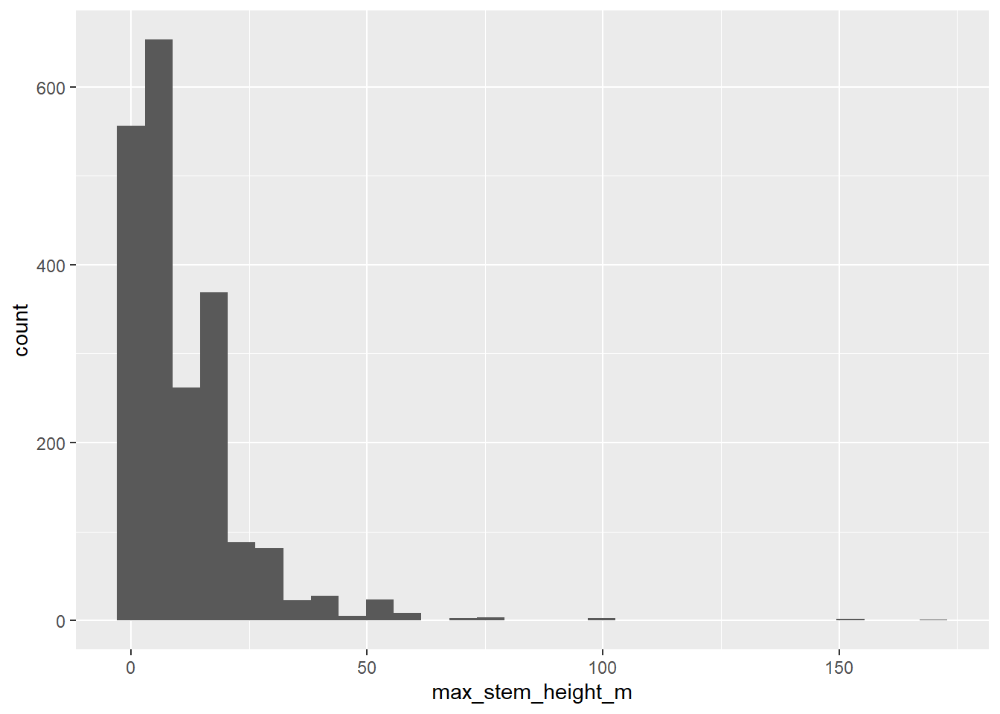
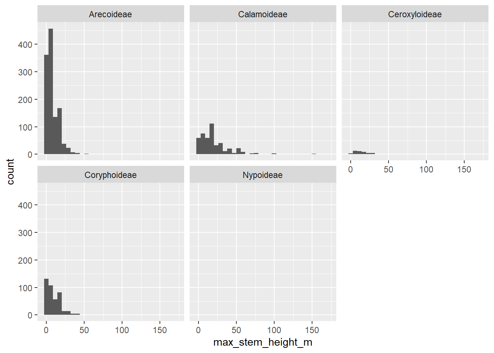
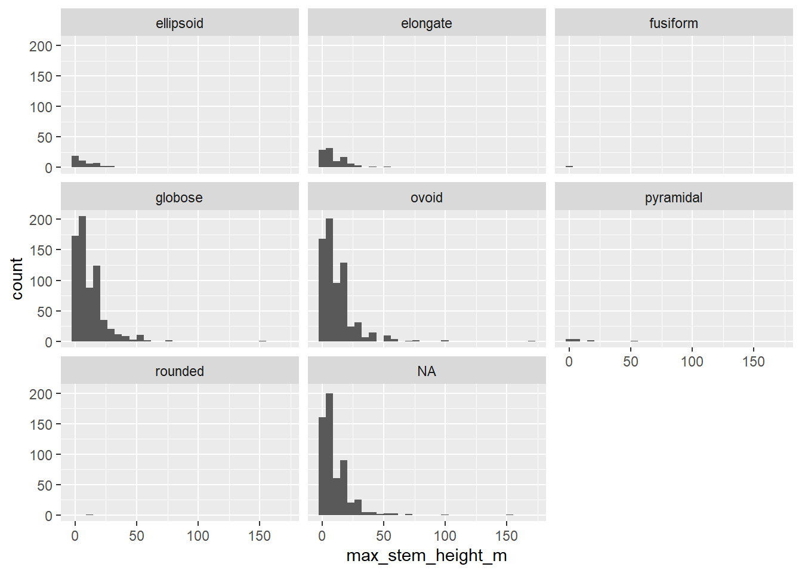
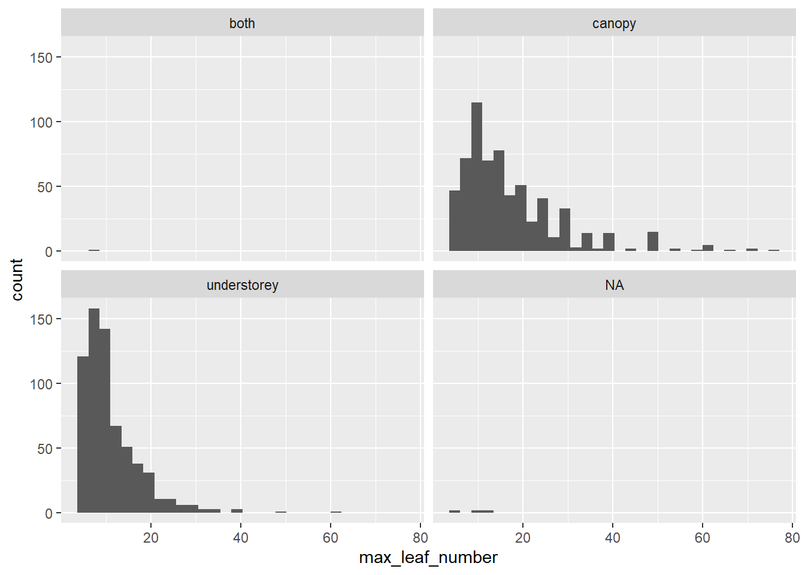
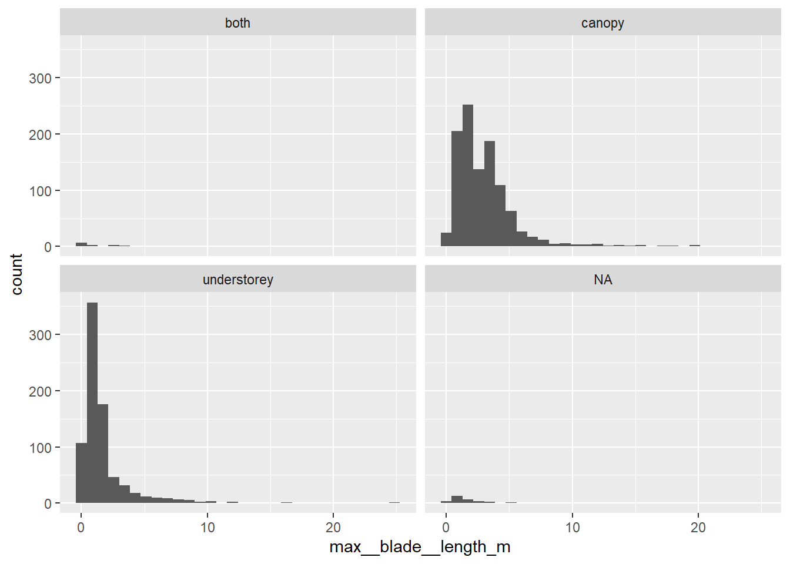
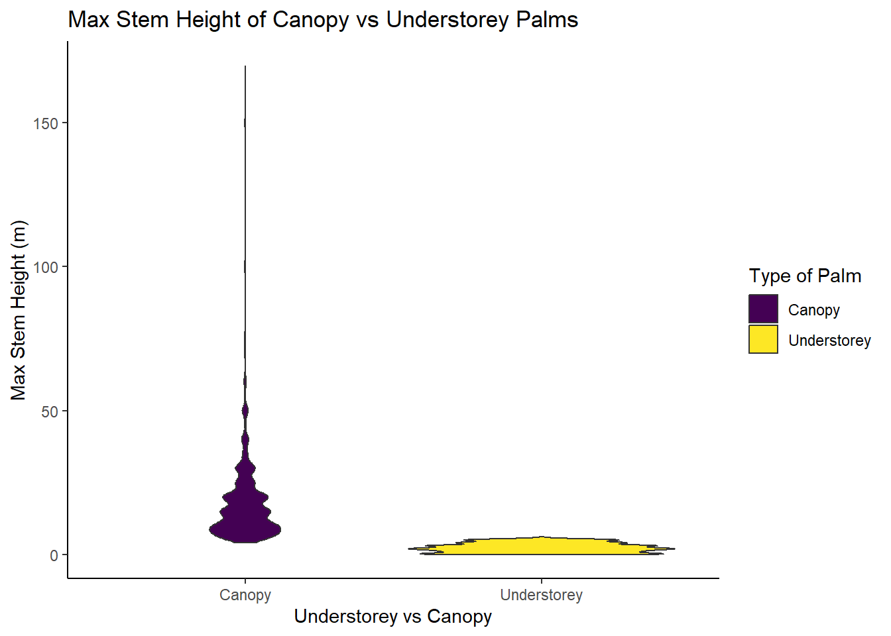
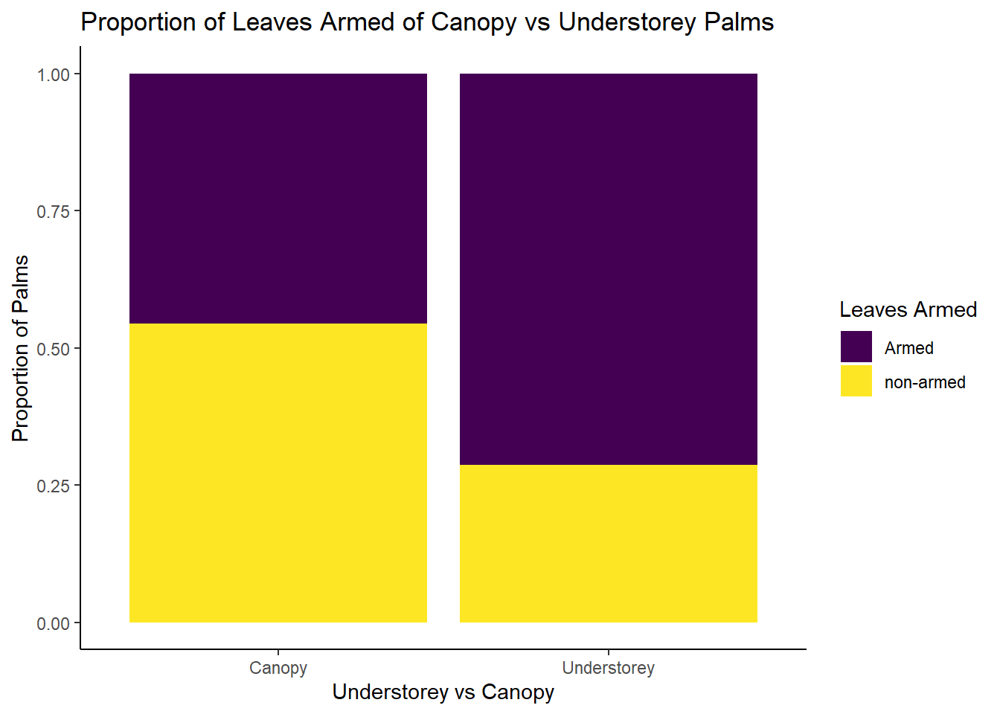
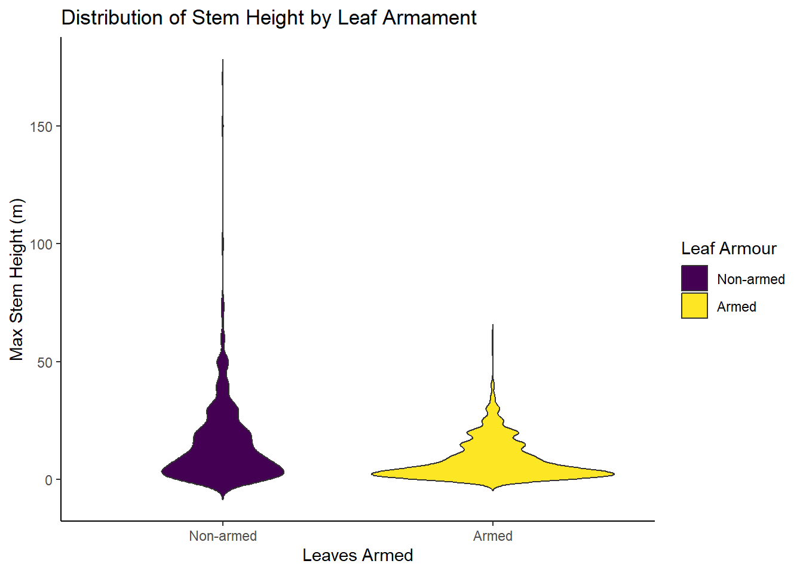

Portfolio 4
library(tidyverse) ## Warning: package 'tidyverse' was built under R version 4.4.3## Warning: package 'ggplot2' was built under R version 4.4.3## Warning: package 'purrr' was built under R version 4.4.3library(ggplot2)
library(viridis)## Warning: package 'viridis' was built under R version 4.4.3palmtrees <- readr::read_csv('https://raw.githubusercontent.com/rfordatascience/tidytuesday/main/data/2025/2025-03-18/palmtrees.csv')## Rows: 2557 Columns: 29
## ── Column specification ────────────────────────────────────────────────────────
## Delimiter: ","
## chr (17): spec_name, acc_genus, acc_species, palm_tribe, palm_subfamily, cli...
## dbl (12): max_stem_height_m, max_stem_dia_cm, max_leaf_number, max__blade__l...
##
## ℹ Use `spec()` to retrieve the full column specification for this data.
## ℹ Specify the column types or set `show_col_types = FALSE` to quiet this message.exploratory graphs looking at the data
palmtrees %>%
ggplot(aes(x = max_stem_height_m)) +
geom_histogram()## `stat_bin()` using `bins = 30`. Pick better value with `binwidth`.## Warning: Removed 446 rows containing non-finite outside the scale range
## (`stat_bin()`).
palmtrees %>%
ggplot(aes(x = max_stem_height_m)) +
geom_histogram()+
facet_wrap(~palm_subfamily)## `stat_bin()` using `bins = 30`. Pick better value with `binwidth`.## Warning: Removed 446 rows containing non-finite outside the scale range
## (`stat_bin()`).
palmtrees %>%
ggplot(aes(x = max_stem_height_m)) +
geom_histogram()+
facet_wrap(~fruit_shape)## `stat_bin()` using `bins = 30`. Pick better value with `binwidth`.## Warning: Removed 446 rows containing non-finite outside the scale range
## (`stat_bin()`).
palmtrees %>%
ggplot(aes(x = max_leaf_number)) +
geom_histogram()+
facet_wrap(~understorey_canopy)## `stat_bin()` using `bins = 30`. Pick better value with `binwidth`.## Warning: Removed 1251 rows containing non-finite outside the scale range
## (`stat_bin()`).
palmtrees %>%
ggplot(aes(x = max__blade__length_m)) +
geom_histogram()+
facet_wrap(~understorey_canopy)## `stat_bin()` using `bins = 30`. Pick better value with `binwidth`.## Warning: Removed 659 rows containing non-finite outside the scale range
## (`stat_bin()`).
Based on my exploratory results I want to create some good plot to tell a story about how canopy and understory palms differ.
Quick googling showed me that canopy trees are those that are taller and receive more sunlight and wind compared to understory trees that receive less sunlight compared to the canopy trees.
#hypotheses
Some hypotheses that I have are: 1 Canopy trees are taller than understory trees 2 Fruit type will be different between groups (conspicuousness) 3 exploratory understorey trees might have more defenses compared to canopy trees (stem or leaves being armed)
#data_cleaning
palmtrees_clean <- palmtrees %>%
filter(understorey_canopy %in% c("canopy", "understorey"))#h_1_taller ##t test
palmtrees_clean %>%
t.test(max_stem_height_m ~ understorey_canopy, data = .)##
## Welch Two Sample t-test
##
## data: max_stem_height_m by understorey_canopy
## t = 37.56, df = 1197.6, p-value < 2.2e-16
## alternative hypothesis: true difference in means between group canopy and group understorey is not equal to 0
## 95 percent confidence interval:
## 14.78904 16.41920
## sample estimates:
## mean in group canopy mean in group understorey
## 17.875108 2.270985##violin_plot
palmtrees_clean %>%
ggplot(aes(x = understorey_canopy, y = max_stem_height_m, fill = understorey_canopy)) +
geom_violin() +
scale_x_discrete(
name = "Understorey vs Canopy",
labels = c(
canopy = "Canopy",
understorey = "Understorey")) +
scale_fill_viridis_d(
name = "Type of Palm",
labels = c(
canopy = "Canopy",
understorey = "Understorey") ) +
labs( y = "Max Stem Height (m)",
title = "Max Stem Height of Canopy vs Understorey Palms") +
theme_classic()## Warning: Removed 183 rows containing non-finite outside the scale range
## (`stat_ydensity()`).
##conclusion Yes, the canopy palms appear to be much taller compared to the understorey palms. On average they are 14.78904 to 16.41920 (95% CI) meters taller.
#h_2_fruit ##testing_proportion
tbl <- table(
palmtrees_clean$understorey_canopy,
palmtrees_clean$conspicuousness
)
prop.table(tbl, margin = 1)##
## conspicuous cryptic
## canopy 0.3505462 0.6494538
## understorey 0.4700855 0.5299145prop.test(
x = c(
tbl["canopy", "conspicuous"], # successes in canopy
tbl["understorey", "conspicuous"] # successes in understory
),
n = c(
sum(tbl["canopy", ]), # total canopy palms
sum(tbl["understorey", ]) # total understory palms
)
)##
## 2-sample test for equality of proportions with continuity correction
##
## data: c(tbl["canopy", "conspicuous"], tbl["understorey", "conspicuous"]) out of c(sum(tbl["canopy", ]), sum(tbl["understorey", ]))
## X-squared = 24.14, df = 1, p-value = 8.959e-07
## alternative hypothesis: two.sided
## 95 percent confidence interval:
## -0.16798814 -0.07109044
## sample estimates:
## prop 1 prop 2
## 0.3505462 0.4700855##bar_plot
palmtrees_clean %>%
filter(
understorey_canopy %in% c("canopy", "understorey"),
!is.na(conspicuousness)
) %>%
ggplot(aes(x = understorey_canopy, fill = conspicuousness, na.rm = TRUE)) +
geom_bar(position = "fill") +
scale_x_discrete(
name = "Understorey vs Canopy",
labels = c(
canopy = "Canopy",
understorey = "Understorey")) +
scale_fill_viridis_d(
name = "Conspicuousness",
labels = c(
conspicuous = "Conspicuous",
inconspicuous = "Inconspicuous") ) +
labs( y = "Proportion of Palms",
title = "Proportion of Conspicuousness of Canopy vs Understorey Palms") +
theme_classic()
##conclusion
There is a statistically significant difference in the proportion of conspicuous fruit between canopy and understorey palms. Understorey palms are more likely to have conspiciuous fruit–meaning they are brighter in color–compared to canopy palms who are more likely to have cryptic fruit–colors making them harder to see.
This might be because understorey palms may be in darker environments, meaning that they need to have brighter colored fruit in order to disperse their seeds where bright colors are not as adventatgeous in the canopy regions.
#h_3_defense ##proportions
#stem
tbl1 <- table(
palmtrees_clean$understorey_canopy,
palmtrees_clean$stem_armed)
prop.table(tbl1, margin = 1)##
## armed non-armed
## canopy 0.89684373 0.10315627
## understorey 0.93162393 0.06837607prop.test(
x = c(
tbl1["canopy", "armed"],
tbl1["understorey", "armed"]
),
n = c(
sum(tbl1["canopy", ]),
sum(tbl1["understorey", ])
)
)##
## 2-sample test for equality of proportions with continuity correction
##
## data: c(tbl1["canopy", "armed"], tbl1["understorey", "armed"]) out of c(sum(tbl1["canopy", ]), sum(tbl1["understorey", ]))
## X-squared = 7.7252, df = 1, p-value = 0.005446
## alternative hypothesis: two.sided
## 95 percent confidence interval:
## -0.05882992 -0.01073049
## sample estimates:
## prop 1 prop 2
## 0.8968437 0.9316239#leaf
tbl2 <- table(
palmtrees_clean$understorey_canopy,
palmtrees_clean$leaves_armed)
prop.table(tbl2, margin = 1)##
## armed non-armed
## canopy 0.4555133 0.5444867
## understorey 0.7139738 0.2860262prop.test(
x = c(
tbl2["canopy", "armed"],
tbl2["understorey", "armed"]
),
n = c(
sum(tbl2["canopy", ]),
sum(tbl2["understorey", ])
)
)##
## 2-sample test for equality of proportions with continuity correction
##
## data: c(tbl2["canopy", "armed"], tbl2["understorey", "armed"]) out of c(sum(tbl2["canopy", ]), sum(tbl2["understorey", ]))
## X-squared = 145.45, df = 1, p-value < 2.2e-16
## alternative hypothesis: two.sided
## 95 percent confidence interval:
## -0.2991478 -0.2177731
## sample estimates:
## prop 1 prop 2
## 0.4555133 0.7139738##bar_plot
palmtrees_clean %>%
filter(
understorey_canopy %in% c("canopy", "understorey"),
!is.na(leaves_armed)
) %>%
ggplot(aes(x = understorey_canopy, fill = leaves_armed, na.rm = TRUE)) +
geom_bar(position = "fill") +
scale_x_discrete(
name = "Understorey vs Canopy",
labels = c(
canopy = "Canopy",
understorey = "Understorey")) +
scale_fill_viridis_d(
name = "Leaves Armed",
labels = c(
armed = "Armed",
unarmed = "Unarmed") ) +
labs( y = "Proportion of Palms",
title = "Proportion of Leaves Armed of Canopy vs Understorey Palms") +
theme_classic()
##violinplot_armedxheight
palmtrees_clean %>%
filter(
leaves_armed %in% c("armed", "non-armed"),
!is.na(max_stem_height_m)
) %>%
mutate(
leaves_armed = factor(leaves_armed, levels = c("non-armed","armed"))
) %>%
ggplot(aes(
x = leaves_armed,
y = max_stem_height_m,
fill = leaves_armed
)) +
geom_violin(trim = FALSE) +
scale_x_discrete(
name = "Leaves Armed",
labels = c("non-armed" = "Non-armed", "armed" = "Armed")
) +
scale_fill_viridis_d(
name = "Leaf Armour",
labels = c("Non-armed", "Armed")
) +
labs(
y = "Max Stem Height (m)",
title = "Distribution of Stem Height by Leaf Armament"
) +
theme_classic()
##conclusion
understorey palms seem to be more likely to have stem armour (p = .005) and leaf armour (p < .001). Leaf armour also is more common for shorter palms, supporting this hypothesis.